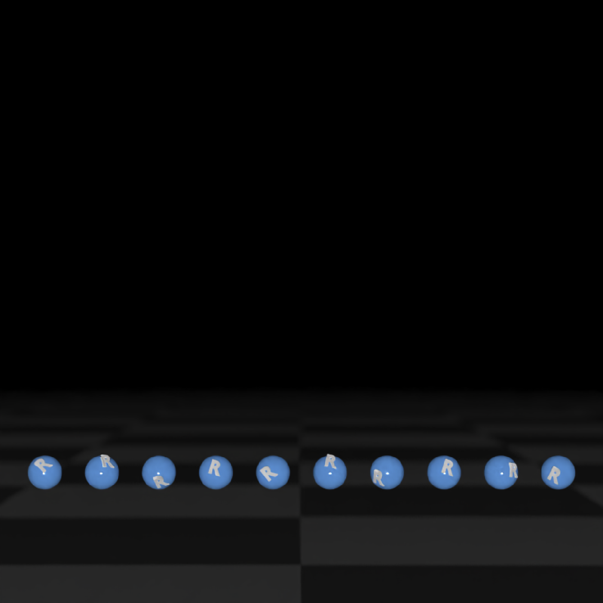
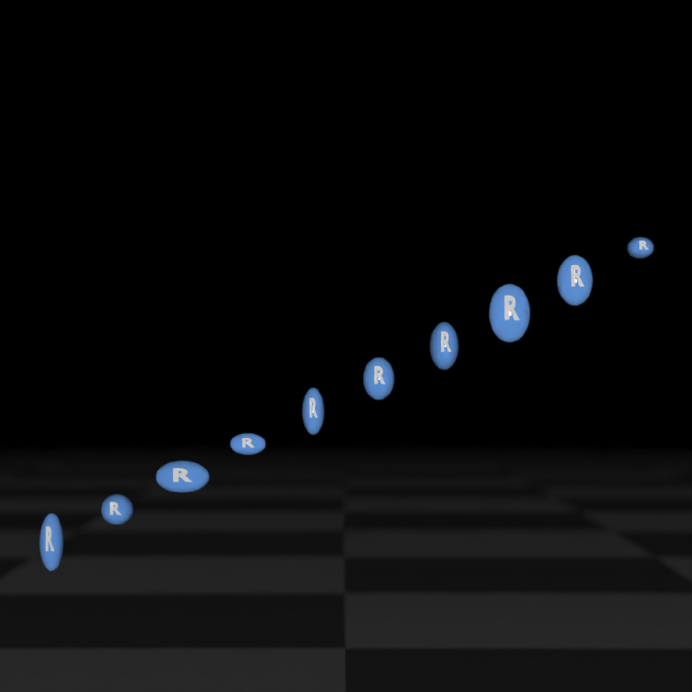
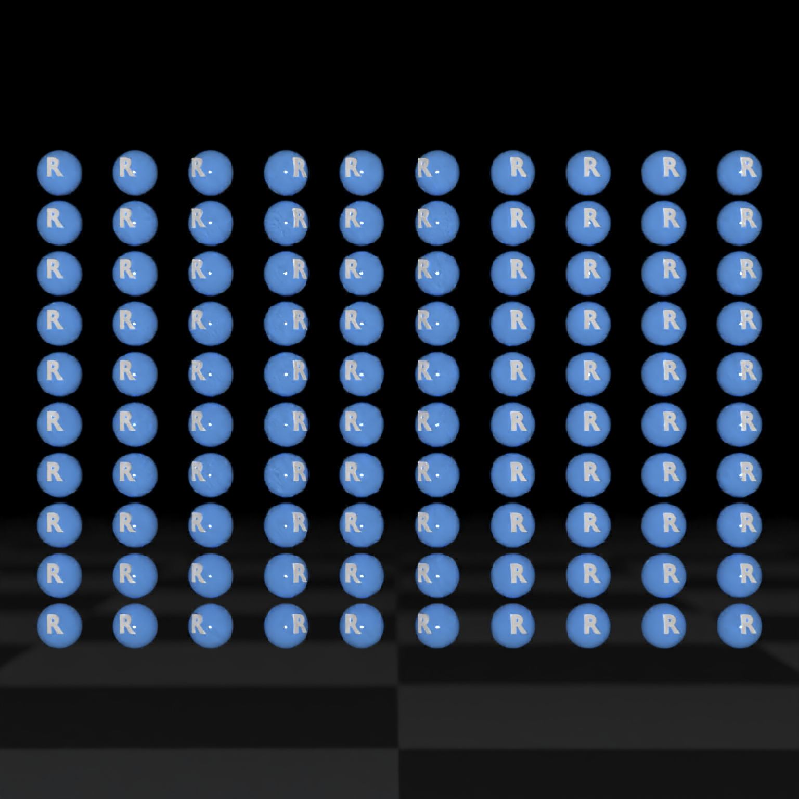
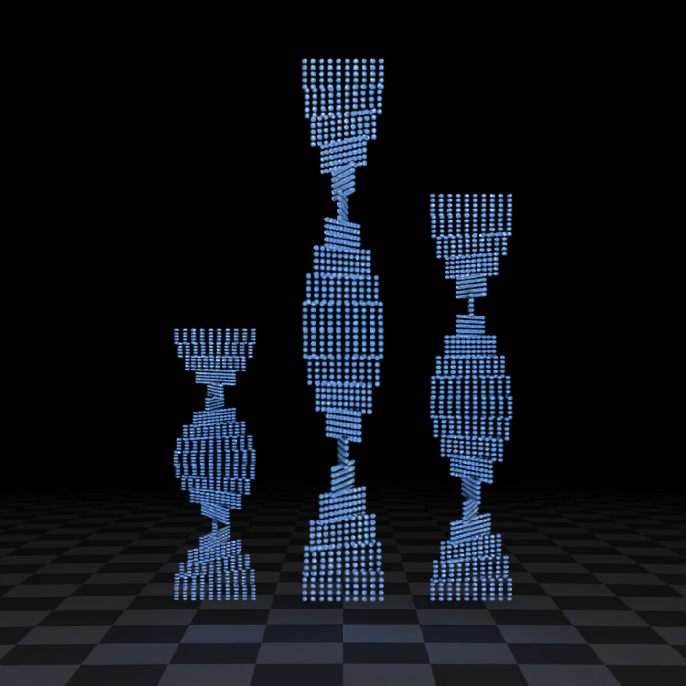
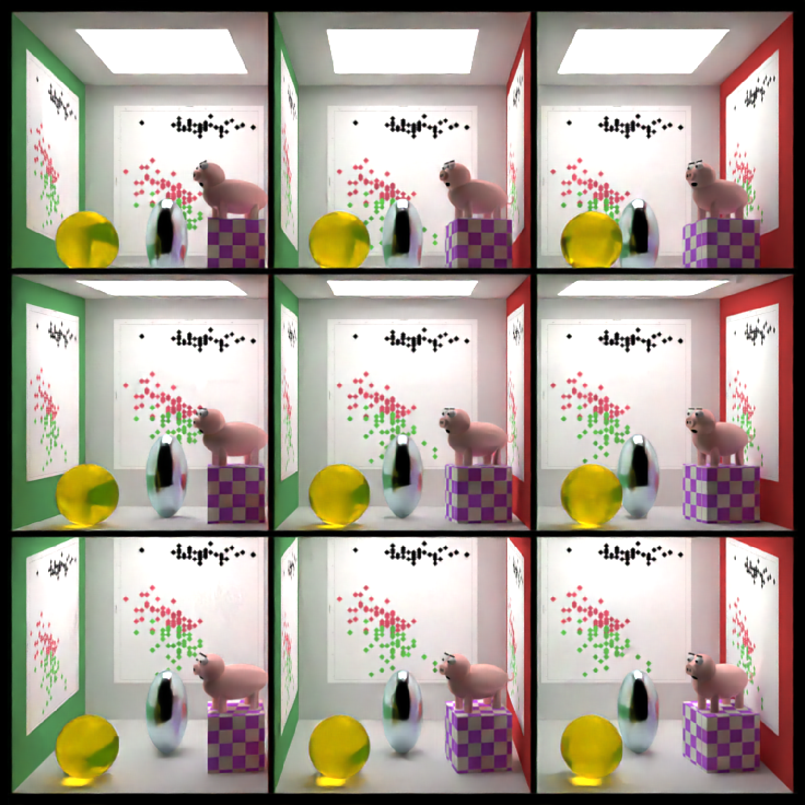

This creates multiple instances of the `ray_scene` passed, each with it's own transformation applied (measured from the origin of the ray_scene). This means the scene only uses the memory of the object once and each copy only requires a 4x4 matrix in memory.
A `ray_scene` object to be copied at the specified transformed coordinates.
Default `0`. A vector of x-coordinates to offset the instances. Note that this can also be a 3 column matrix or `data.frame()` parsable by `xyz.coords()`: if so, the other axes will be ignored.
Default `0`. A vector of y-coordinates to offset the instances.
Default `0`. A vector of z-coordinates to offset the instances.
Default `0`. A vector of angles around the x axis to rotate the instances.
Default `0`. A vector of angles around the y axis to rotate the instances.
Default `0`. A vector of angles around the z axis to rotate the instances.
Default `0`. A vector of values around the scale the instances on the x-axis.
Default `0`. A vector of values around the scale the instances on the y-axis.
Default `0`. A vector of values around the scale the instances on the z-axis.
Default diffuse.The material, called from one of the material
functions diffuse, metal, or dielectric.
Default `c(1, 2, 3)`. The order to apply the rotations, referring to "x", "y", and "z" axes.
Single row of a tibble describing the instance in the scene.
if (run_documentation()) {
# Generate the base scene
base_scene = generate_ground(material = diffuse(checkercolor = "grey20")) %>%
add_object(sphere(z = 100, radius = 10, material = light(intensity = 70)))
# Start with a single sphere with an R in it
sphere_scene = sphere(y = 0, material = glossy(color = "#2b6eff", reflectance = 0.05)) %>%
add_object(obj_model(r_obj(simple_r = TRUE), z = 0.9, y = -0.2,
scale_obj = 0.45, material = diffuse())) %>%
group_objects(scale = 0.1)
# Render the scene
sphere_scene %>%
add_object(base_scene) %>%
render_scene(lookat = c(0, 1, 0), width = 800, sample_method = "sobol_blue", aperture = 0.2,
height = 800, samples = 16, clamp_value = 20)
}
if (run_documentation()) {
# Create instances at different x positions, with random rotations applied
create_instances(sphere_scene,
x = seq(-1.5, 1.5, length.out = 10),
angle_x = 90 * (runif(10) - 0.5),
angle_y = 90 * (runif(10) - 0.5),
angle_z = 90 * (runif(10) - 0.5)) %>%
add_object(base_scene) %>%
render_scene(lookat = c(0, 1, 0), width = 800, sample_method = "sobol_blue",
height = 800, samples = 16, clamp_value = 20)
}

if (run_documentation()) {
# Create instances at different x/z positions, with random scaling factors
create_instances(sphere_scene,
x = seq(-1.5, 1.5, length.out = 10),
y = seq(0, 1.5, length.out = 10),
scale_x = 0.5 + runif(10),
scale_y = 0.5 + runif(10),
scale_z = 0.5 + runif(10)) %>%
add_object(base_scene) %>%
render_scene(lookat = c(0, 1, 0), width = 800, sample_method = "sobol_blue",
height = 800, samples = 16, clamp_value = 20)
}

if (run_documentation()) {
# Create instances of instances
create_instances(sphere_scene,
x = seq(-1.5, 1.5, length.out = 10),
angle_y = 90 * (runif(10) - 0.5)) %>%
create_instances(y = seq(0, 2, length.out = 10)) %>%
add_object(base_scene) %>%
render_scene(lookat = c(0, 1, 0), width = 800, sample_method = "sobol_blue",
height = 800, samples = 16, clamp_value = 20)
}

if (run_documentation()) {
# Create instances of instances of instances of instances
create_instances(sphere_scene,
x = seq(-1.5, 1.5, length.out = 10),
angle_y = 90 * (runif(10) - 0.5)) %>%
create_instances(y = seq(0, 1, length.out = 5)) %>%
create_instances(y = seq(0, 2, length.out = 20) * 10,
angle_y = seq(0, 360, length.out = 20)) %>%
create_instances(x = c(-5, 0, 5),
scale_y = c(0.5, 1, 0.75)) %>%
add_object(base_scene) %>%
render_scene(lookat = c(0, 10, 0), lookfrom = c(0, 10, 50),
width = 800, sample_method = "sobol_blue", fov = 30,
height = 800, samples = 16, clamp_value = 20)
}

if (run_documentation()) {
# Generate a complex scene in a Cornell box and replicate it in a 3x3 grid
# Here, a single `data.frame` with all three coordinates is passed to the `x` argument.
tempfileplot = tempfile()
png(filename = tempfileplot, height = 1600, width = 1600)
plot(iris$Petal.Length, iris$Sepal.Width, col = iris$Species, pch = 18, cex = 12)
dev.off()
image_array = png::readPNG(tempfileplot)
# Note that if a instanced scene has importance sampled lights and there are many instances,
# it will be slow to render.
generate_cornell(importance_sample=FALSE) %>%
add_object(ellipsoid(x = 555 / 2, y = 100, z = 555 / 2, a = 50, b = 100, c = 50,
material = metal(color = "lightblue"))) %>%
add_object(cube(x = 100, y = 130 / 2, z = 200, xwidth = 130,
ywidth = 130, zwidth = 130, angle = c(0, 10, 0),
material = diffuse(checkercolor = "purple", checkerperiod = 30))) %>%
add_object(pig(x = 100, y = 190, z = 200, scale = 40, angle = c(0, 30, 0))) %>%
add_object(sphere(x = 420, y = 555 / 8, z = 100, radius = 555 / 8,
material = dielectric(color = "orange"))) %>%
add_object(yz_rect(x = 5, y = 300, z = 555 / 2, zwidth = 400, ywidth = 400,
material = diffuse(image_texture = image_array))) %>%
add_object(yz_rect(x = 555 / 2, y = 300, z = 555 - 5, zwidth = 400, ywidth = 400,
material = diffuse(image_texture = image_array), angle = c(0, 90, 0))) %>%
add_object(yz_rect(x = 555 - 5, y = 300, z = 555 / 2, zwidth = 400, ywidth = 400,
material = diffuse(image_texture = image_array), angle = c(0, 180, 0))) %>%
create_instances(x = expand.grid(x = seq(-1, 1, by = 1) * 556 - 555 / 2,
y = seq(-1, 1, by = 1) * 556 - 555 / 2,
z = 0)) %>%
render_scene(lookfrom = c(0, 0, -800) * 3, fov = 40,
samples = 16, sample_method = "sobol_blue",
parallel = TRUE, width = 800, height = 800)
}
